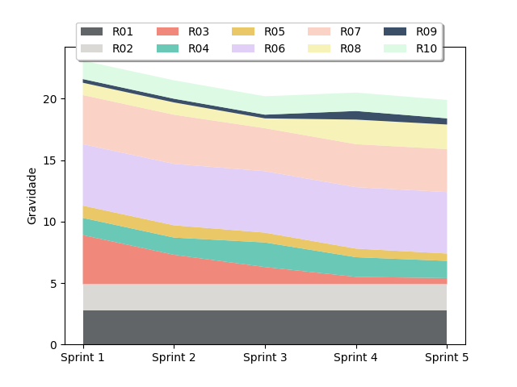

Plano de Gerenciamento de Riscos
1. Introdução
O Plano de Gerenciamento de Riscos consiste em identificar, analisar e planejar estratégias focadas na prevenção e controle dos possíveis impactos causados pelos riscos presentes no projeto.
De acordo com o PMBOK, a aplicação do gerenciamento de riscos é essencial para estabeler uma comunicação de qualidade e estabelecer uma visão convergente entre os stakeholders do projeto. Para avaliar e conter os riscos identificados, os seguintes pontos serão aplicados:
2. Identificação dos riscos
A metodologia selecionada para identificar os riscos existentes foi o SWOT (Strengths/Weaknesses/Oportunities/Threats), que nada mais é do que um modelo para enumerar aspectos existentes, tanto a nível de projeto quanto a nível de equipe, que podem impactar positivamente ou negativamente o resultado. Sua aplicação se baseia na matriz abaixo, onde cada quadrante representa um das perspectivas já citadas:
| Forças | Oportunidades |
|---|---|
| Fraquezas | Ameaças |
No caso do nosso projeto, foram identificados os seguintes pontos:
FORÇASMembros de EPS com bastante experiência em projetos e nas tecnologias Abertura e disponibilidade do Professor Evandro |
OPORTUNIDADESUtilização do software por outras empesas/universidadess Criar uma integração maior ente as Engenharias de Software e Automotiva |
FRAQUEZASIntegração da equipe de desenvolvimento Integração da equipe de EPS Desenvolvedores com pouca experiência com as tecnologias Comunicação Gerentes sem experiência com gerência |
AMEAÇASSistema ser crítico Escopo do projeto ser grande Atrasos na entrega de atividades Erros de planejamento Uso de três tecnologias diferentes Sistema ter uma parte feita no Windows Membros de EPS e MDS trabalham |
3. Documentação dos riscos
Os riscos serão registrados seguindo a seguinte organização:
| ID | Risco | Probabilidade | Impacto (Sprints) | Gravidade | Estratégias |
|---|---|---|---|---|---|
A evolução da probabilidade e do impacto ao longo das sprints pode ser visualizada nesta planilha.
4. Análise qualitativa
A análise qualitativa consiste em realizar a priorização dos riscos seguindo um escala relativa ou descritiva a fim de se determinar a probabilidade de cada evento previsto acontecer. Essa categorização, no nosso caso, é indicada pelos seguintes níveis: muito baixo, baixo, médio, alto e muito alto.
5. Análise quantitativa
A análise quantitativa se baseia em uma escala numérica para determinar a probabilidade dos riscos acontecerem. Como mostram as tabelas abaixo, existem duas escalas, a que representa os intervalos indicando a probabilidade do risco acontecer e a que estabelece os intervalos representando a correspondência entre dias perdidos e o nível desse impacto gerado pelos riscos:
Níveis relativos a probabilidade
| Probabilidade | Intervalo |
|---|---|
| Muito Baixa | Menor que 20% |
| Baixa | de 21 a 40% |
| Média | de 41 a 60% |
| Alta | de 61 a 80% |
| Muito Alta | Acima de 80% |
Níveis relativos ao impacto
| Impacto | Intervalo |
|---|---|
| Muito Baixo | 1 sprint ou menos |
| Baixo | 2 sprints |
| Médio | 3 sprints |
| Alto | 4 sprints |
| Muito Alto | 5 sprints ou mais |
Essas duas tabelas se relacionam para criar uma terceira, nomeada gavidade, que nada mais é do que a multiplicação do impacto em dias pela probabilidade do risco inerente a esse impacto ocorrer.
Gravidade
| Impacto/Probabilidade | Muito Baixa | Baixa | Média | Alta | Muito Alta |
|---|---|---|---|---|---|
| Muito Baixo | < 0.2 | 0.21~0.4 | 0.41~0.6 | 0.61~0.8 | > 0.8 |
| Baixo | < 0.4 | 0.42~0.8 | 0.82~1.2 | 1.22~1.6 | > 1.6 |
| Médio | < 0.6 | 0.63~1.2 | 1.23~1.8 | 1.83~2.4 | > 2.4 |
| Alto | < 0.8 | 0.84~1.6 | 1.64~2.4 | 2.44~3.2 | > 3.2 |
| Muito Alto | < 1 | 1.05~2 | 2.05~3 | 3.05~4 | > 4 |
Podemos assim, por meio dessa tabela, determinar os valores que determinam as prioridades, de muito baixa à muito alta, da seguinte forma:
| Prioridade | Intervalo |
|---|---|
| Muito Baixo | menor que 1 (inclusive) |
| Baixo | de 1 a 2 (inclusive) |
| Médio | de 2 a 3 (inclusive) |
| Alto | de 3 a 4 (inclusive) |
| Muito Alto | maior que 4 |
Riscos
| ID | Risco |
|---|---|
| R01 | Escopo grande impossibilitar entrega |
| R02 | Arquitetura complexa causar complicações no andar do projeto |
| R03 | Curva de aprendizado grande das tecnologias usadas por MDS |
| R04 | Comunicação falha entre membros de EPS/Divergência de opiniões entre membros de EPS |
| R05 | Atraso na entrega das issues por uso massivo de ferramentas de checagem automática de código |
| R06 | Projeto ter uma parte desenvolvida no Windows |
| R07 | Sistema interagir com equipamento mecânico e gerar falhas que impactem a segurança |
| R08 | Falta de planejamento |
| R09 | Desmotivação da equipe |
| R10 | Tratar stakeholder(s) como cliente(s) |
Burndown dos riscos
